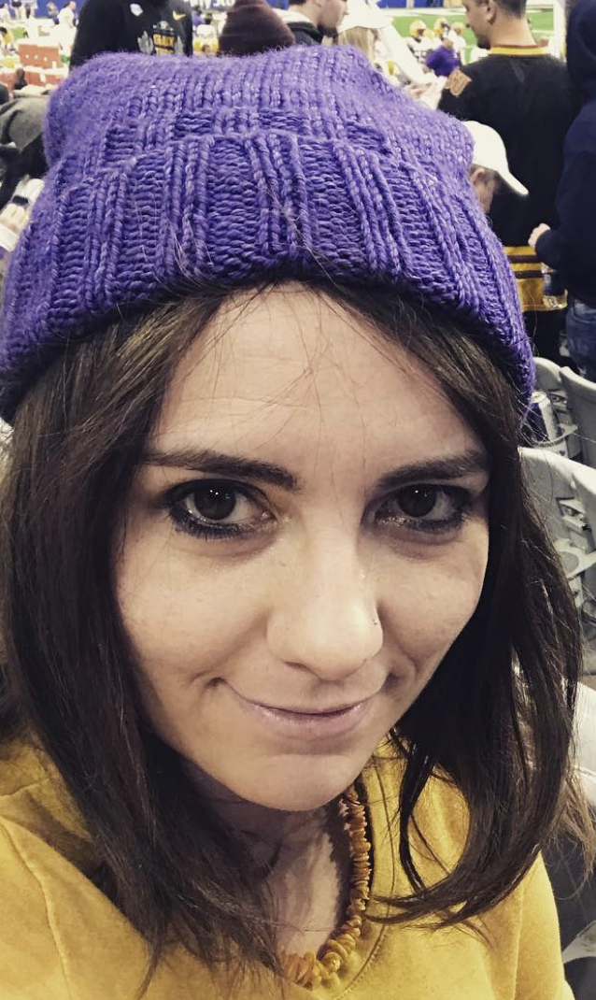

About Me
I am an observational astronomy postdoc at Steward Observatory with a broad interest in massive stars:
from how they are formed, how they evolve, and ultimately how they end their lives. My ongoing research can be
roughly divided into the study of core collapse supernovae (CCSNe), electromagnetic follow-up to gravitational wave events
and the investigation into variations in the upper end of the initial mass function (uIMF).